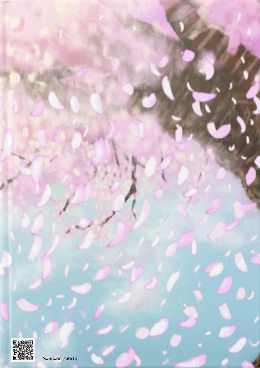

| その妖、桜の木にて待つ | |
| 虚像一心 | |
| 虚像一心出版 (2018) | |
桜の木である"妖"
彼女が初めて言葉を交わしたのは――
――人の子でした
この本はBCCKSで発行された
『その妖、桜の木にて待つ』
著 者：虚像一心
発 行：虚像一心出版
のEPUB版です。
EPUB版は、BCCKSの紙面とレイアウトや表示が異なります。
BCCKS版の閲覧は、以下のURLをご覧ください。
http://bccks.jp/bcck/156912/info

Powered byBCCKS
───────────────────────
その妖、桜の木にて待つ
虚像一心
虚像一心出版
───────────────────────
【――桜の妖――】
――ああ、本当に、どうしようもなくつまらない。
桜の木として生を受け、何の縁故か、私は桜の"妖"になった。
人の子からは見えないので、幾度となく話しかけても無視されてしまう。
その私は、今こうして自身の身体とも言える桜の木の枝に寝転がっているが。
それでも、退屈なモノはどうしようもない。
......あ、いや、退屈だけならばまだ許そう。
それよりも嫌なモノが――
「ねぇ、そんなことしたら怒られるよ？」
「大丈夫だって、誰でも見てねぇんだし」
――たった今、私の身体であった『桜の木』の枝を一本へし折ったこういう奴等だ。
既にこの身は妖として存在している為、枝を折られた程度では痛くも痒くもない――が！
こうして目の前で何の許可も無く、私の身体を折られるのは許せない！
それが、ただ何の意味もなくだった場合は――もっとだ！
嬉しそうにニヤつきやがって......だったらこうしてやる！
今はちょうど桜の花が咲いている頃だ。
であれば――
ゆっさゆっさ、ゆっさゆっさ。
ゆっさゆっさ、ゆっさゆっさ。
こうして桜の木の幹を揺らしてやれば――
「うわッ！ 毛虫が降って来た！」
「いやぁ、私の頭にも乗って来た！ きゃっ、腕にも！」
そう、大量の毛虫が降って来るのだ。
ざまぁみろ！ 毛虫君達よ、その無礼な男女に纏わり着いてやれ！
上から毛虫達に指示を下した私が見ているのは、必死に逃げている若い男女の姿だ。
ああ、愉快でたまらない！ たまにはこうして無礼な人間に罰を与えるのも悪くはないな。
でも......そうだな。折られた枝をどうするかが問題だ。
私は妖とは言え、この桜の木からは離れられない。
それが例え一寸程度であってもだ。だから私は枝をあいつ等が落とした枝を拾うことはおろか。
木から降りる事すら叶わない。
なんと悲しい生だろうか。
......いや、そもそも桜の木であった私がこうして人の身体を手に入れていること自体が奇跡なのだ。
それ以上の欲を言ってしまえば、私に罰が当たるかもしれない。
先日、雨風に乗って降って来た雷。
あれに当たった桜の木があったのだ。
私の場所から離れているとはいえ、あれはきっと天から見下ろしている神様とやらが、あの桜の木に怒ってやった行いなのだろう。
いついかなる時も監視されているのはむず痒いことではあるが。
その"神様"とやらも、大変な日々を過ごしているに違いない。
いつもこうして木の枝の上でぐうたらと寝転がっている私と比べれば、それはもう働きモノなのだろう。
でも......私にも。
せめて話し相手がいれば良いのだが......
「あのぉ――――」
そうそう、こうして話しかけてくるような者がいれば、もっと楽しいだろうなぁ。
「あのぉ......すいません」
――一体誰に話しかけているのだ？
待ち合わせ......とは思えない。こんな何処にでもありそうな桜の木の下で待ち合わせをする人の子など、私は見たことが無い。
ではこの声は一体......
「そこの枝で横になっている――お姉さん」
――私のこと......だろうか？
気になったので私は身体を起こし、その声の主の顔を見る――すると。
「..................」
「..................」
バッチシ、目が合ってしまった。
――え、この小童......私のことが見えるのか......？
いやいや、そんなわけがない。だって私は妖なんだもの。見えるわけがない。
でも今現在進行形で私と目が合っている......それは間違いない。
だったら一つ......試してやろうか。
「――なんだ、小童。私に何か用か？」
「......用って程ではないんだけど......」
――どうやら完全に私のことが見えているようだ。
この時代の人の子にしては珍しいな......一体何処の霊媒師の子だ？
「..................」
見たところ、ただの人の子にしか見えないな。
だが......顔の傷が気になる。
あれは何かに当たって出来た傷......だろうか。
「............枝」
「あん？」
「折られちゃったね......」
急に話題を振って来たので、思わず変な声で返してしまった。
だがそんなこと――ただの子供が気にすることではあるまいし。至極どうでも良いことだろうに。
しかし......そうだな。せっかくの話し相手だ。精々楽しませてもらうとするか。
「確かに折られはした。だが人の子よ......別に枝の一本や二本程度、折られたところで、私の輝きは変わりはしない。他の枝に咲いている花がそれを補うからだ」
「でも......折られた時、あなたは嫌そうな顔をしていたよ？」
――ずっと見ていたのか、コイツは......
「ああ、確かに嫌だったな。でもな、小童――あれは私の許可なく、勝手に私の枝を折ったからだ。一言『ください』と言えば、私の広い心はそれを赦した......はずだ」
自分でも自信がないから断言は出来ないが、多分、きっと、恐らくは許しているはずだ。
それが、このように小さい童ならば、多分だ。
だが――そんなことでこの小童は私に話しかけてきたのか？
だったらあまりにも奇特過ぎるな。理解出来ない。
そもそも妖が見えるのならば、それだけでも忌み嫌われそうなモノなのだが――
――ああ、そうか。この小童の顔の傷は。
他者の人の子に、妖が見えるからと言われて虐めを受けているのだな。
だからここまで声が小さくて、堂々としていないのか。
なるほど、なるほど。これで分かった。
しかし......妖が見えると言っても、それを隠せばいいだけのはずではないのか？ 人の子の生活は良く知らぬが......
――ふむ、ちょっとした情けでもくれてやるか。
「――小童、その枝、そなたにくれてやろう」
「え......？」
驚きの表情を浮かべたな、中々愉快な奴じゃないか。
「なに、気まぐれと言う奴だ。せっかくの枝も、愛でる者がいなければ、それはただ朽ちていくのを待つだけの運命だ。だがそなた――そなたがその枝を愛でてやれば、その枝も喜ぶだろう」
「......あなたの、枝なのに......？」
「私から切り離された枝は、もう私の身体ではない。だからそなたが持つが良い......いや、持て。これは命令だ、拒否権は無い」
ちょっとだけ意地悪をしてやった。
人の子がどうであれ、ただ花が咲いた枝など、使い道など無いだろうに。
それを無理矢理押し付けられたのだ、嫌に決まっていよう。
ニヤニヤしながら、上から見下ろしながら。
私はその小童がどのような反応をするのか、楽しむ。
「......ありがと、じゃあ、貰うね」
その小童は私が予想していた反応とは正反対の反応を見せて、落ちた枝を拾った。
「......なんだ、つまらん」
「え？」
「あ、いや......気にするな」
思わず声に出てしまったか......まあ良いだろう。
というか、何故この私がたかが人の子ごときでここまでしないといけないのだ？
「......お姉さん、ここでずっと何をしているの？」
何の話を振って来るかと思えば、そんなことか。
そんなこと、訊くまでもないことだろうに。
まあ......答えてやるとするか。
「私はここで日がな一日、私自身の『桜の木』を見守っておるのだ」
「ずっと？」
「そうだ、ずっとだ。雨に打たれようが、風に吹かれようが、嵐が来ようが......。私は『私』から離れられないのだ。それが妖と言うモノよ。それが人とは違う生き物よ」
「そうなんだ......じゃあ。僕と同じ独りぼっちなんだね」
「......なんだと？」
その言葉を聞いて、私は少々違和感を覚えた。
人の子が独りぼっちだと？ ――どういうことだ？
「小童、そなた――親はどうしたのだ？」
人の子は『親』と言う者が子を育てる......というのを風の噂で聞いたことがある。
であれば、それは必然的に"独りぼっち"ではないはずだ。
なのに、何故......この小童は独りなのだ？
「僕ね......お父さんとお母さん、いないんだ......」
小童は悲し気な表情を浮かべてそう言った。
「交通事故で、二人ともあっと言う間に......。僕はまだ小さいから色んな人のところでお世話になっているけど、その家の人達とはあまり、仲が良くないんだ」
「何故だ？ 人の子は群れるのが好きだろう？ なのに、何故そなたは群れない？」
「――見えないモノが見える、から......かな」
「妖が見える――しかし、人の子と言うのは本来"妖"が見えない。なのに、そなたは見えるから好かれない......ということか？」
「そういうことになるね。だから......」
何とも難しい話だ。
人の子と言うのは幼くとも嫌われるのか。
それは私とは全く違う悩みだな。私には解決策の一つも浮かびはしない。
だが......そうだな。
せめてその愚痴くらいは聞いてやろう。
「そなた――名は何という？」
「僕？ ......サクラ」
「サクラ、か......なんとまあ奇妙な偶然もあったものだ。まさか桜の季節に、人の子である『サクラ』と出逢うことになるとはな」
「僕も。お姉さんの名前は？」
「む、私のか？ ......しばし待て」
私の名前......？ どんな名前だったっけ......
今まで私のことを名前で呼ぶ奴などいなかったから特に気にはしなかったが......なるほど、名と言うのはこのような時に使う物なのだな。
しかし......名、か。どのような名であれば良いのだ......？
「......もしかして、名前、無いの？」
「――いや、在るぞ。ちゃんと、私には、名がある」
見栄を張って言い切ってしまった。もう後には引けないなぁ。
小童......サクラも、心なしか目に生気が宿っているようにも見えるし......ええい！
「私の名は――ハル、だ」
「ハル......ハルさん、か......」
適当に名を言ってみたら、意外とあっさり受け入れた......？
人の子と言うのは疑うと言うことを知らないのか？
「じゃあ、ハルさん。明日も、ここに来て良いかな？」
「......好きにしろ。どうせ私はここから動けんのだ」
「ふふ、そうだったね。じゃ、また明日」
そう言って、私の"初めての話し相手"サクラは、私がくれてやった『私』の枝を持って何処かに行ってしまった。
――ああ、中々愉快な時間だった。そうか、これが話すと言うことか。
何故今まだこのような楽しみを見つけられなかったんだろう。明日が楽しみだ。
......いや！ いやいやいや！ 楽しみなわけがあるか！
私は妖だ！ 人の子とは違うのだ！
......クソ、これが"話す"と言う魔力か。人の子め、意外にえげつない手を使ってくるではないか。
しかし......楽しみなのは事実だな。
早く明日にならないモノかなぁ......。
【――破られた約束、出逢えた奇跡――】
だが――明日になっても、いつまで待っても。
サクラが再び私の前に姿を見せることは無かった。
どうやら私はあっさりと騙されたらしい。
そうだ、そもそも私と人の子が仲良くすること自体がおかしかったのだ。
こんなころっと騙されては妖の名が恥じると言うもの。
もう二度と騙されんぞ！
――そして私は誰とも話さないまま、長い年月を独りで過ごした。
一体どれだけのお天道様が顔を出したことか。
一体どれだけの雨が私の身体に降ってきたことか。
一体どれだけの季節が過ぎたことか。
一体どれだけの――春が、来たことか。
もはや数えきれないぐらいの日が経った――のにも関わらず。
『私』の身体はまるで生き生きとしているかのように、その若さを保ちながら、今日も桜の花を咲かせていた。
これが、元々は私だったのが少々悩ましいところだが......まあいい。
どうせ、今日も暇なのだから。
......にしても、今日は一段と気持ちが良いな。
このまま昼寝でもしていようか。
そう思って、私は『私』の枝の上で寝転がり、そのまま瞼を閉じる。
「――ああ、やっぱりまだここにいてくれた」
しかし、誰かは私の安眠を妨害したいらしい。
せっかく気持ちよく眠ろうとしたのに......腹が立った！
一体何処の誰だ⁉ 私の睡眠を妨害した奴は！
怒りを抑えきれず、無意識に起き上がった私の目に飛び込んできたのは――
「久しぶり、ハルさん」
「..................ッ」
私のことを『ハル』と呼ぶのはこの世でたった一人しかない。
だがアイツは......私との約束を破り、姿を消した......はずなのに！
何故......何故......
人の子である......身体が大きくなった......
サクラが......ここにいるのだ......？
「あなたとの約束、破ってしまったことが心に残ってしまって。だからこうして戻って来たんだ。でも......ふふ、何も変わってないね」
「ぁ............あ......」
「驚かせてしまってごめん。でも......ずっと、逢いたかったんだ。僕の"初めての友達"だったからさ」
無邪気な童のように笑ったソイツは。
私が言葉を発しないことを良いことに、私に言葉を言ってくる。
「本当に......本当に、サクラ......なのか......？」
「どこからどう見ても、サクラ本人だよ。十年の間で、目が悪くなったの？」
「――ッ、ぬかせ！ 私の目が悪くなるわけがないだろうが！」
「......その口調、元気なままだったね」
「ぬかせ、人の子......が......ッ！」
――何故だ......何故視界が霞むのだ......？
目を擦ると、そこには水が付いていた。今日は雨ではないと言うのに......何故だ？
その水は私の目からとめどなくあふれ出てくる。
この目はどうなっているのだ⁉ 私の身体はついにおかしくなったのか⁉
「......あの時、ハルさんに会いに行こうと思ったら、僕はこの町から離れてしまったんだ。だから約束を破ってしまった。でも――」
サクラは私に手を差し伸べてきた。
しかし私にはその手を取ることは出来ない。ここから離れることが出来ないのだから。
「あなたとまた逢えて――良かった」
「――ッ！」
優しく微笑んだサクラに、私は何の躊躇いも無く。
「阿呆――――ッ！」
その身体に、飛びついていた。
なんだ、私が『私』から離れることが出来ない......と言うのは私の思い違いだったようだ。
今私がこうしてサクラの身体に抱き着いているのが何よりの証拠だ。
だが......何故だろうか。
私の身体の中がもやもやする。この感覚は一体なんなのだ――⁉
「もう二度と......あなたとの約束は破らない。だから――」
「阿呆......阿呆がッ！ そのようなことで、わざわざここまで来なくともよかろうに......！ やはり人の子と言うのは阿呆だ、理解出来ぬ！」
「その人の子との約束を守っていたのは、何処の誰？」
「うぅ......うううぅ............！」
――ああ、そうか。
これが人の子等との会話の中で聞いたことがある『悲しい』と言う奴か。
であれば、この目から流れているモノは『涙』と言う奴なのか。
ああ、私がこのように人の子と同じように涙を流すなど......今まであっただろうか。
「......ただいま、ハルさん」
「よくぞ......よくぞ帰ってきてくれた――サクラ！」
――いや、違うな。この感情は『悲しい』と言う奴ではないな。
この感情は――『嬉しい』だ。嬉しくて涙が止まらないのだ。
二度と......二度とこの感情を手放すものか！
私は......ようやく......
"初めての話し相手"と再会出来たのだから――ッ！
その妖、桜の木にて待つ
2018年11月15日 発行 初版
著 者：虚像一心
発 行：虚像一心出版
©2018 虚像一心 Printed in Japan
bb_B_00156912
bcck:http://bccks.jp/bcck/00156912/info
user:http://bccks.jp/user/143740
format:#002y
Powered by BCCKS
株式会社BCCKS
〒141-0021
東京都品川区上大崎 1-5-5 201
contact@bccks.jp
http://bccks.jp
